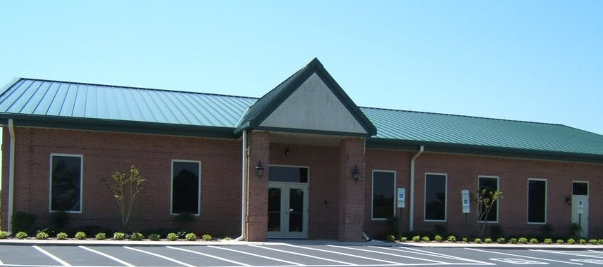

Sunday School
Classes for every age, from newborns all the way up to senior adults, every Sunday at 9:45 AM.
Sunday School
Spring Lake, North Carolina
A Gospel-focused, Bible-preaching Baptist church. Friendly, family-oriented, and glad you found us.
9:45 AM Sunday School, all ages
11:00 AM Worship service
6:00 PM Worship service
6:00 PM Adult Bible study
6:00 PM AWANA clubs
Welcome
Layton Chapel has met on Anderson Creek School Road since 1935. We are a small, family-oriented congregation that sings from the hymnal, preaches from the Bible, and knows one another by name.
If you are looking for a church, come sit with us on a Sunday. Nobody will single you out, and someone will be glad to answer your questions afterward.

Watch
We stream our Sunday morning service. The player below always opens the most recent one.
Loads from YouTube when you press play. More ways to listen
Ministries
From the nursery to our senior adults, there is a place to learn, grow and serve.
Classes for every age, from newborns all the way up to senior adults, every Sunday at 9:45 AM.
Sunday SchoolChildcare for infants and toddlers during Sunday morning services, and Children's Church for ages 4 through 2nd grade.
Children's ministriesWednesday nights from September to May, with clubs for ages 3 through high school. Registration is open online.
About AWANAWednesdays at 6:00 PM, at the same time as AWANA, so parents and children can come together.
Adult Bible studyPlan a visit
1230 Anderson Creek School Rd., Spring Lake, NC 28390. Parking is in the lot directly in front of the building, and the main entrance is the covered doorway in the center.
9:45 AM, with a class for every age group. Ask anyone at the door and they will point you to the right room.
11:00 AM. We sing from the hymnal and the preaching is from the King James Bible.
Nursery care is available for infants and toddlers during the 11:00 service, and children ages 4 through 2nd grade are invited to Children's Church.
Call the church office at (910) 893-8365 or send us a message. We would rather answer a question than have you wonder.
Replace this
Add what a first-time visitor should know that only the church can tell us: what people typically wear, roughly how long the morning service runs, and whether greeters are at a particular door. See README.
That is fine. Come as you are, sit wherever you like, and stay for as much or as little as you want. If you would rather see what a service is like before you come, watch one online first.
We are an independent Baptist church and we preach from the King James Bible. Our statement of faith sets out what we hold, and the Gospel explains the message at the center of it.